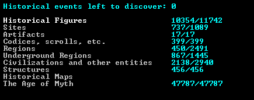

Przed rozpoczęciem rozgrywki gra musi losowo wygenerować świat tworząc kontynenty, miasta, osady itp. Pisana jest również historia świata, gdzie zarejestrowane są bitwy, narodziny i śmierci królów oraz inne istotne wydarzenia. Generowane są różne tereny i klimaty od gorących pustyń po lodowce, każdy teren może też być koszmarnym terenem gdzie osiedlenie się będzie znacznie utrudnione, przez deszcze krwi, opary przemieniające krasnoludy w zombie, czy też przez przeróżne stwory zamieszkujące te obszary. Światy mogą wygenerować przeróżne rzeczy jak rzeki, lasy, pustynie, strome góry, pustkowia, oceany.
Przy generacji obszaru możemy wybrać jego wielkość, długość historii jaka zostanie wygenerowana, ilość cywilizacji, zła itp.

Po wygenerowaniu świata gracz może wybrać jeden z dwóch trybów gry: standardowy Dwarf Fortress Mode, w który kontroluje się osadę krasnoludów oraz tryb Adventure Mode, gdzie porusza się jednym bohaterem podróżującym po świecie. Dwarf Fortress posiada także tryb Legends Mode, który nie jest trybem rozgrywki, ale umożliwia graczowi poznanie historii swojego świata, który jest opisany bardzo szczegółowo, są tam opisane wszystkie postacie historyczne, stwory, cywilizacje i ich historia, artefakty, konflikty i dużo innych. Na świecie istnieje dużo różnych ras, jak na przykład elfy, ludzie, gobliny a nawet bardziej oryginalne stworzenia jak ludzie-grzyby, wilkołaki itp.